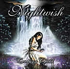
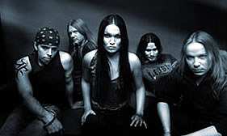
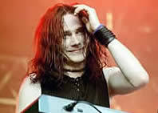

Entrevista
de Tuomas Holopainen à Tombstone Zine - Setembro de 2002
Falando sobre
o mais recente trabalho do Nightwish, Century Child,
poderíamos dizer que vocês optaram por fazer um
som um pouco mais progressivo?
Bem eu não tinha pensado ainda
sobre isso, mas acho que sim, já que há sempre
algo novo em cada álbum. Mas eu ainda não pretendo
mudar o estilo que nós desenvolvemos porque eu acho que
agora este conceito é realmente bom do jeito que está,
mas a cada álbum quero experimentar um pouco mais. Em
Century Child nós fizemos experimentos com os estilos
vocais, nós colocamos vocais masculinos e também
usamos uma orquestra e um coro de vozes reais pela primeira
vez.
Na
minha opinião, o novo cd tem músicas um pouco
mais técnicas. Isso foi proposital?
Sim, eu acho que desta vez, nós
deixamos de fora alguns dos elementos tradicionais de power
metal que você ainda ouvia anteriormente em Wishmaster.
Você sabe o que quero dizer, não há, por
exemplo, aquela bateria tipo Helloween e coisas assim. A música
é realmente mais "cinemática", mais
visual, eu tiro muita inspiração de filmes e trilhas
sonoras e eu acho que as pessoas podem perceber estas influências
em nosso som.
E ele pode
ser considerado um álbum conceitual?
Eu não consideraria Century Child
um álbum conceitual, mas há um tema comum pertencendo
a quase todas as canções. Eu classificaria Century
Child como um álbum temático, mais não
conceitual. Quando eu escrevi as canções, todas
as músicas foram elaboradas de forma individual, mas
depois de prontas, eu percebi que quase todas elas estavam tratando
da mesma coisa que é o tema da inocência, da infância
e especialmente a inocência perdida neste mundo.
Por que você
acha que as pessoas estão perdendo sua inocência?
Eu acho que a abordagem do tema "inocência
perdida" começou como um auto-retrato. Ano passado
foi muito duro para mim e para a banda, mas especialmente para
mim no lado pessoal, assim comecei pensando em coisas como em
que tipo de pessoa eu havia me tornado ao longo dos anos, no
que eu queria ser, e assim por diante. Então eu notei
que a verdadeira inocência que eu tive, ou que qualquer
pessoa teve, quando nós éramos crianças,
já foi embora e isto é muito triste, já
que a infância geralmente é o melhor momento de
nossa vida, no qual não temos que nos preocupar com os
problemas maiores do mundo. Eu realmente quis modificar algo
em mim com este álbum, digo isso em uma das canções,
Ocean Soul, que diz "Por minha música
eu quero me tornar algo bonito uma vez mais". O processo
de composição de Century Child para mim, foi como
uma terapia, coloquei todos esses sentimentos no papel em forma
de música e agora quando eu ouço o CD, me sinto
um pouco mais aliviado. Acho até mesmo que sou agora
uma pessoa um pouco melhor.
Houve
alguns rumores ultimamente sobre a saída de Tarja da
banda. Gostaria que você me contasse o que aconteceu realmente.
Eu realmente não posso entender
a reação da mídia e dos fãs para
com isto. Todo o mundo está realmente amedrontado sobre
o que está acontecendo com a banda porque no ano passado
nós perdemos nosso baixista e nós mudamos a agência
que nos empresariava e agora nós anunciamos que vamos
dar um tempo de um ano. A coisa é que vamos dar um intervalo
durante o ano 2003, mas nós possivelmente ainda iremos
fazer alguns festivais na Europa. Esta pausa basicamente significa
que não vai haver álbum novo em 2003 e que nós
não iremos excursionar, mas a banda definitivamente não
está se separando e eu já estou escrevendo músicas
novas. Nós regressaremos no ano 2004. É justo
uma pausa normal para descansarmos um pouco, não?
Após
essa pausa, Tarja permanecerá na formação
da banda?
Sim, absolutamente.
E antes do
fim do ano vocês ainda pretendem fazer outra excursão
ou alguns pequenos shows?
Isso seria impossível porque a Tarja
já está estudando na Alemanha e a escola dela
é extremamente rígida. Assim não há
nenhum modo de fazermos qualquer excursão. A única
chance que nós temos é de fazer alguns pequenos
shows nos finais de semana antes do Natal. Isso já seria
muito.
O que você
pretende fazer durante esse tempo. Ficará longe da música?
Não, definitivamente não.
Nós todos vamos continuar perto da música. Temos
alguns projetos e também participações
em gravações de outras bandas. Eu, por exemplo,
toco teclados em outra banda de metal finlandesa e tenho ainda
mais alguns projetos para esse período. Passarei este
tempo bem ocupado.
O baixista
Sami Vänskä deixou a banda no ano passado. O que ocorreu?
Em primeiro lugar quero esclarecer que
foi uma decisão mútua. A motivação
dele para com a banda realmente não era boa o bastante.
Nós notamos isso e falamos com ele, já que o Nightwish
nunca foi o que realmente ele queria fazer. Assim todos nós
concordamos que seria melhor para a banda, e para ele, se nós
mudássemos. Não houve nenhuma briga ou algo assim.
No lugar dele entrou o Marco Hietala, (Synergy e Tarot).
Quais foram
os elementos novos que Marco Hietala trouxe à banda?
Quando eu comecei procurando um baixista
novo eu queria alguém que pudesse cantar também.
Eu já sabia que utilizaríamos vocais masculinos
no álbum novo, achei que nós poderíamos
adquirir dois pelo preço de um. Por isso escolhi o Marco,
porque ele faz ambos perfeitamente bem e, de certo modo, ele
renovou o estado de espírito da banda. Todo o mundo está
se sentindo melhor agora. Ele é mais velho, toca baixo
há 20 anos e já passou por muitas coisas. Ele
é uma pessoa realmente muito calma e amável e
é como uma figura paterna para nós.
Quando
você está compondo, o que você tem em mente:
você ou os fãs?
Eu terei que ser egoísta aqui,
pois a verdade é que eu só penso em mim. Eu tento
me fechar e deixar fora de minha cabeça os fãs
e a mídia para só assim eu poder fazer o que eu
quero exatamente. Pode ser duro dizer que eu não me preocupo
com os fãs, pois é claro que eu penso neles, mas
eu também tento manter isto fora de mim o máximo
possível quando componho minhas músicas.
Qual a sua
maior preocupação quando está lançando
um álbum novo?
Meu maior medo é quando pego a
versão final do cd, antes de sair nas lojas, e vou para
casa ouví-lo. Eu nunca fico satisfeito comigo e esse
é o momento de maior medo que eu tenho. Tenho isso porque
normalmente trabalho como um louco por um ano para as escrever
as canções e depois mais seis meses para as gravações
e o resto, logo, se eu não ficar satisfeito, é
um desperdício de um ano e um meio de trabalho duro.
Se isso acontece
e você não fica satisfeito com algo no álbum,
vocês lançam ele assim mesmo ou refazem as coisas
que não agradaram?
Depende do tamanho desta insatisfação.
Você sabe que eu nunca estou 100% satisfeito com qualquer
um de nossos álbuns e não acho que seja possível
eu ficar um dia, mas se eu sinto que aquele álbum é
o melhor que eu posso fazer neste momento, então eu lanço
o álbum no mercado. Mas se o resultado não foi
nada do que eu esperava, então eu refaço tudo.
Extraída
de www.nightwishbrasil.com